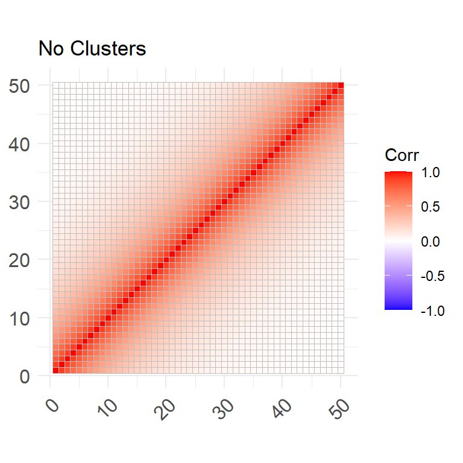
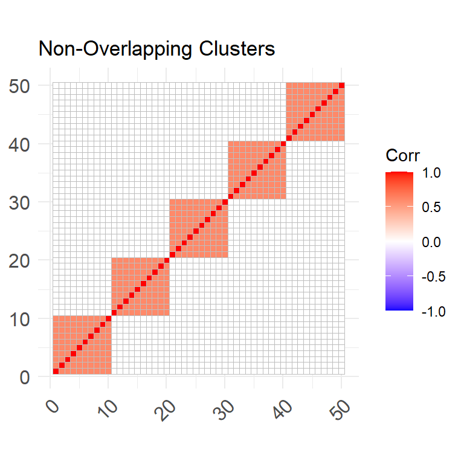
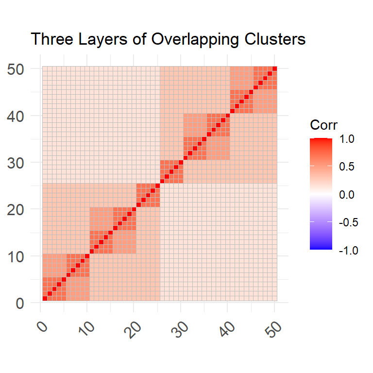
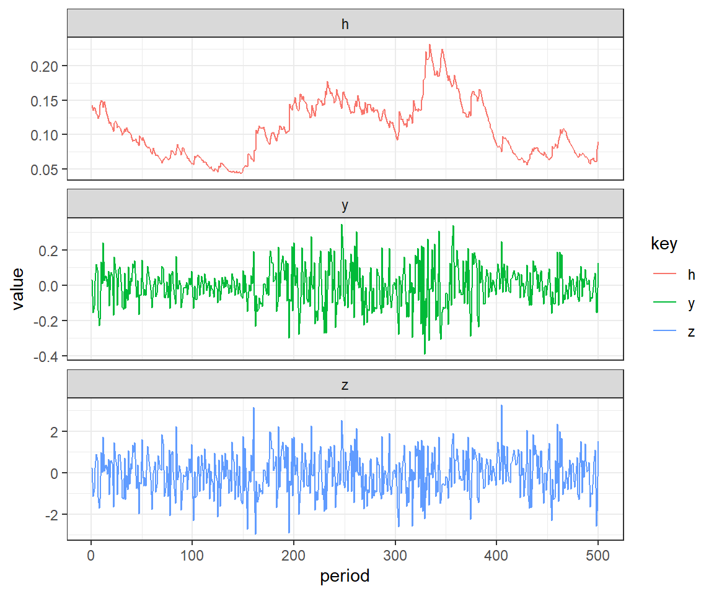
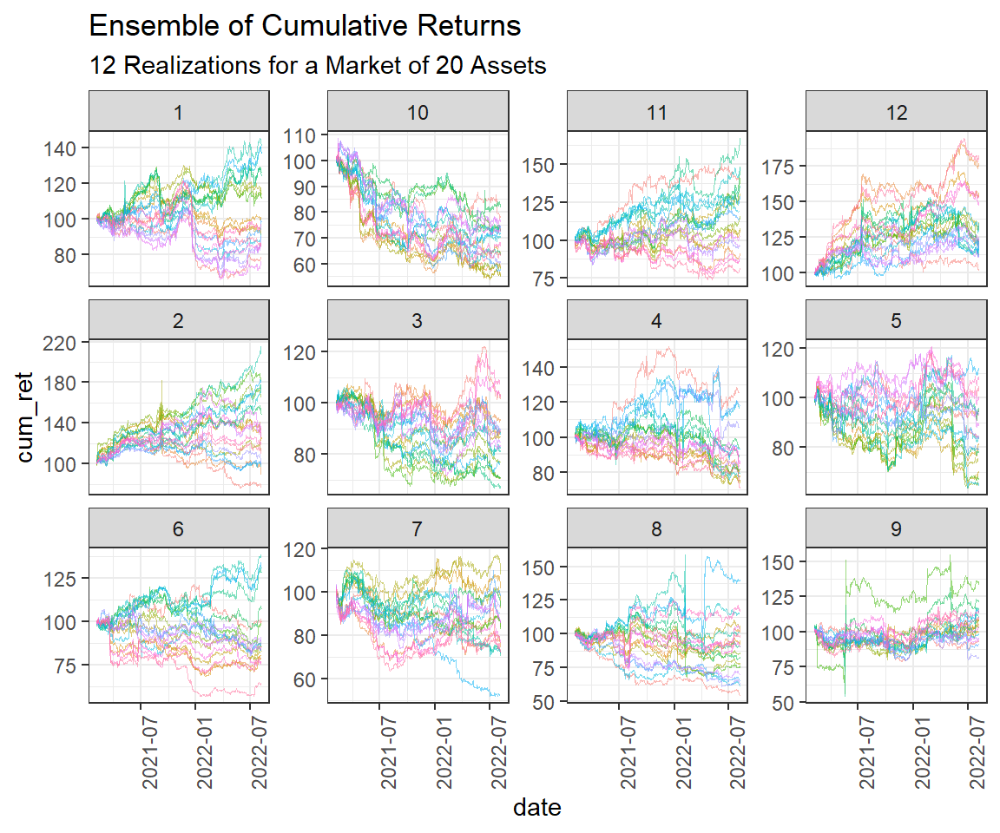

MCmarkete: An R package for the Monte Carlo Simulation of Financial Markets
Abstract
This work presents MCmarket, an R package designed to provide users with the tools to easily perform Monte Carlo simulations of financial asset markets. The framework set out in the package allows users to specify the market’s cross-section dependence structure using the multivariate distributions described by the Gaussian, t and Clayton copulas. The asset return series can be set in accordance with a normal, t or skewed generalized t probability distribution function (pdf). Mean and variance persistence can then be induced by invoking an ARMA + APGARCH model. This package can be used in risk management, asset or derivative pricing and evaluating or robustness-testing of portfolio trading algorithms, among others.
Keywords: monte carlo, copula, garch.
1 Introduction
In the field of quantitative finance, Monte Carlo simulations have been used extensively in the evaluation of portfolio optimization algorithms, risk management and the pricing of financial securities. Their unique ability to generate an ensemble of counter-factuals i.e. possible alternative realizations of stochastic processes with identical characteristics, makes them a powerful tool in aiding decision making in domains dominated by random events. They are also relatively easy to construct compared to alternative techniques that rely on complex mathematics. Meanwhile, the steady improvement in computer processing power has made the more sophisticated Monte Carlo techniques increasingly viable.
This work lays out a generalized adaption of a pre-established framework for performing the Monte Carlo simulation of financial asset market returns, built into the MCmarket package. Importantly, the framework simulates markets to be in accordance with the user-defined dependence structure. This framework also provides the functionality to induce various univariate asset return distributions, as well as, specify the mean and variance persistence of the return series. The setting of time-series persistence is accomplished with a high degree of precision, since the exact parameters of each asset’s ARIMA(p,q) + APGARCH(q,p) equation can be specified. The key input to this financial market Monte Carlo framework is typically the market’s correlation matrix. This greatly effects the potential for diversification and impacts risk management. An interesting addition to this package is the option to use the Clayton copula to specify the market’s multivariate distribution/cross-sectional dependence. Unfortunately, this removes the users ability to stipulate the market correlation structure, but creates markets with left-tail dependence. In other words, when using the Clayton copula, the correlation between assets increases in periods when average market returns are low, and decrease when they are high. This functionality is particularly useful when simulating asset markets since it is a well documented phenomenon that financial returns experience increased co-dependence during turbulent times (Syriopoulos and Roumpis 2009).
The aim of developing this package was to provide users with a set of functions that allow them to simulate financial market return data with a highly generalizable set of risk factors. Furthermore, usability was a key concern when developing the package as it aimed to enable users with minimal knowledge of coding and/or the underlying mathematical/statistical techniques to quickly and easily perform Monte Carlo simulations. Due to the importance of dynamic correlations observed within financial markets during crisis periods, an avenue to induce various levels of the left-tail dependence within the market multivariate distribution was also implemented. At this stage, the package presents a highly generalized tool for simulating financial markets that users with some prior knowledge of statistical concepts, such as probability distributions and time-series models, can grasp. At a later stage, a dashboard will be created for non-technical users to be able to simulate markets from a list of presets. Furthermore, the Monte Carlo framework will be extended to enable the option for regime shifts in the correlation structure, this will be implemented through a Markov process and will enable the evaluation of financial models during market changes.
2 Methodology
The methodology used in the MCmarket package is a generalized adaption of that used in Wang, Sullivan, and Ge (2012). This involves the use of copulas to define the market’s multivariate distribution, which is then used to simulate random uniformly distributed draws with various pre-specified dependence structures. These random uniformly distributed draws serve as the building blocks of the Monte Carlo process. They are the only source of randomness since all further steps are deterministic manipulations of said observations (Ruppert and Matteson 2011). Note that the distribution of each of these random draws are referred to as univariate distributions. In this context, it is useful to think of a copula as a multivariate cumulative distribution function (CDF) with Uniform (0,1) marginal distributions (Ruppert and Matteson 2011[p. 183]). Since all variables posses the same marginal cumulative distribution function (CDF), copulas only contain information on the dependencies within the multivariate distribution (Ruppert and Matteson 2011).
MCmarket incorporates two broad families of copula’s, namely the Elliptical and Archimedean. The Elliptical Gaussian and t-copulas correspond to the respective multivariate normal and t distributions. These are used for their convenient property of relying on a \(D \times D\) correlation matrix to define their dependence. The t-copula also has a degrees of freedom parameter which is useful for adjusting market risk. Archimedean copulas, on the other hand, define multivariate distributions which exhibit either left or right tail dependence. This refers to an increase or decrease in dependence within either the left or right tail of the multivariate distribution. Often the dependence further increases or decreases as observations occur further in the tails. Due to issues concerning the speed of computation and functionality within high dimensions, only the Clayton copula is used. This copula was found to be particularly useful since it naturally possesses left-tail dependence and can be defined in high dimensional spaces with limited cost to computational speed. Unfortunately, the Clayton copula does not accept a correlation matrix as one of its parameters and can therefore, not be used to simulate markets with predefined correlation structures. An avenue to create Archrimdian-Clayton hybrid copulas was investigated, however, these proved to be unsuccessful in dimensions greater than 2.
Another important property of copulas is that their component variables are invariant to monotonic (strictly increasing) transformations (Ruppert and Matteson 2011). This property allows for the transformation of the marginals from Uniform(0,1) into any other closed form distribution via the inversion of the semi-parametric CDF (Ruenzi and Weigert 2011). MCmarket provides users with the functionality to transform the Uniform(0,1) univariate distributions into normal, student-t or skewed generalized t (SGT) distributions. It is important to reiterate that this step is simply a transformation and involves no randomness given the inputs i.e. the random uniformly distributed draws.
MCmarket allows users to induce mean and/or variance persistence into the simulated data. This is accomplished via the use of the time-series ARMA + APARCH model and involves plugging the univariate distributions, which have by now been transformed to either normal, student-t or SGT distributions, into an ARMA(p,q) + GARCH(q,p) equation as the innovations of the process. This allows the user to precisely select parameters describing the time-series properties of the simulated data, and thereby, introduce varying degrees of mean and variance persistence. This step, if done correctly, is able to introduce many of the time-series characteristics observed in real world financial return data. For example, financial returns have been noted to posses “outlier-prone” probability distributions, by inducing variance persistence it becomes far more likely for the simulated returns to produce outliers (Ruppert and Matteson 2011). Another empirical phenomenon observed in many financial time-series that can be replicated, is that negative returns tend to positively influence volatility by more than positive returns of equal magnitude. This is referred to as the leverage effect and the APARCH model is one such volatility model capable of accommodating this effect. Specifically, this is accomplished via its gamma parameter (Ruppert and Matteson 2011). Furthermore, the generalizable nature of APARCH (it nests at least 7 other models including the vanilla GARCH and ARCH models) makes it ideal to incorporate into MCmarket’s framework (Laurent 2004).
3 Process
The Monte Carlo process involves the following 4 steps:
This example generates k periods of returns for D Assets across N counter-factual markets.
- Draw a series of k random, uniformly distributed numbers (corresponding to k trading periods), across a set of D variables (or D assets) from a multivariate Gaussian, t or Clayton copula.
- The Gaussian and t-copulas can be specified with a correlation matrix and the Archmediean Clayton copula can be used to induce left-tail dependence. This is easily accomplished using R’s copula package (Hofert, Kojadinovic, Maechler, and Yan 2020).
- Convert the univariate distributions from uniform into something that more resembles the distribution of asset returns. For example, one could convert them into normal, student-t or skewed-generalized t distributions.
- Induce mean and variance persistence to the series by plugging the results from step 2 into an ARMA(p,q) + GARCH(q,p) equation as the i.i.d innovations.
- If the parameters are set accordingly, the resulting series will closely resemble real world return data.
- Repeat the first 3 steps N times to generate an ensemble of asset markets, each with the same risk characteristics but different realizations.
4 Functions and Examples
4.1 gen_cor
This function allows users to easily generate a user-defined ad hoc correlation matrix with up to four layers of clusters.
4.1.1 Parameters: gen_cor
- D the number of variables. The output is a D by D correlation matrix.
- clusters a character string specifying the type of cluster structure. Available options are:
- “none” for a correlation matrix with no clusters, but significant correlation between constituents.
- “non-overlapping” for a correlation matrix with one layer of clusters.
- “overlapping” for a correlation matrix with up to four layers and a set number of clusters per layer.
- num_clusters
- If clusters = “none”, then num_clusters is not used.
- If clusters = “non-overlapping”, then num_clusters is an integer indicating the number of clusters.
- If clusters = “overlapping”, then num_clusters is a vector of length less than or equal to four. The length of num_clusters specifies the number of cluster layers and the integers within the vector specify the number of clusters per layer. It is preferable to arrange the vector in descending order, since failing to do so can result in a unique output, which may not contain the intended number of layers. Additionally, using combinations with repeating numbers of clusters, for example num_clusters = C(10, 10, 5, 5)) will produce fewer layers, but unique intra-cluster correlations (See examples).
- Value
- This function returns a D by D correlation matrix.
R> ### Loading required packages.
R> library("MCmarket")
R> library("ggcorrplot")
R> library("dplyr")
R>
R> ### 50 by 50 Correlation matrix with no clusters.
R> cor1 <- gen_corr(D = 50, clusters = "none")
R> ggcorrplot(cor1, title = "No Clusters")
R> ### 50 by 50 correlation matrix with 5 non-overlapping clusters.
R> cor2 <- gen_corr(D = 50, clusters = "non-overlapping", num_clusters = 5)
R> ggcorrplot(cor2, title = "Non-Overlapping Clusters")
R> ### 50 by 50 correlation matrix with 2, 5 and 10 overlapping clusters.
R> cor3 <- gen_corr(D = 50, clusters = "overlapping", num_clusters = c(10, 5, 2))
R> ggcorrplot(cor3, title = "Three Layers of Overlapping Clusters")
4.2 sim_garch
This function takes a vector of random numbers, referred to as innovations, and induces mean and variance persistence by inserting them into an ARMA(1,1) + APARCH(1,1) model.
4.2.1 Parameters: sim_garch
innovations a vector containing the random numbers or the innovations of the ARIMA + GARCH process.
omega a positive value defining the coefficient of the variance equation. The default is 5e-04.
gamma a value defining the APARCH leverage parameter in the variance equation. The default of 0 implies no leverage effect and therefore, corresponds to the standard GARCH model.
alpha a value defining the autoregressive variance coefficient. The default is 0.
beta a value defining the variance coefficient. The default is 0.
mu a value defining the mean. The default is 0.
ar a value defining the autoregressive ARMA coefficient. The default is 0.
ma a value defining the moving average ARMA coefficient. The default is 0.
delta a strictly positive value defining the delta parameter of the APARCH model. The default is 2, which corresponds to the standard GARCH model.
simple a logical parameter indicating if the output should be a simple vector containing just the resulting ARIMA + GARCH series, or if FALSE a three column dataframe containing z - the innovations, h - the conditional variance and y - ARMA + APARCH series.
Value
- If simple = TRUE this function returns a vector of the resulting ARMA + APARCH series. Else if simple = FALSE a three column dataframe containing z - the innovations, h - the conditional variance and y - ARMA + APARCH series. Note the length of the resulting series will be one observation less than that that of the innovations as ARMA(1,1) + APARCH(1,1) model effectively consumes this lag when producing its first value.
Note
- It is suggested that the randomly distributed numbers have a mean of zero and standard deviation of one, as these attributes can be set within sim_garch.
- For more information on the ARMA + APARCH parameters see Ruppert and Matteson (2011).
4.2.2 Examples: sim_garch
R> ### Loading required packages.
R> library('MCmarket')
R> library('tidyverse')
R>
R> ### Creating series of 501 innovations
R> set.seed(586423)
R> inno <- rnorm(501)
R>
R> ### This produces a ARIMA + GARCH series of length 500.
R> GARCH <- sim_garch(inno,
R+ mu = 0.000002,
R+ omega = 0.00005,
R+ alpha = 0.098839,
R+ beta = 0.899506,
R+ ar = 0.063666,
R+ ma = NULL,
R+ gamma = 0.12194,
R+ delta = 1.85,
R+ simple = FALSE
R+ )
R> head(GARCH, 10)# A tibble: 10 x 3
z h y
<dbl> <dbl> <dbl>
1 NA NA NA
2 0.226 0.143 0.0323
3 -1.15 0.135 -0.154
4 -0.767 0.140 -0.117
5 0.231 0.138 0.0244
6 0.905 0.131 0.120
7 0.609 0.128 0.0859
8 -1.18 0.124 -0.140
9 -1.70 0.128 -0.227
10 -1.25 0.143 -0.193 R> ### Plotting z - the innovations, h - the conditional variance and y - ARMA + APARCH series.
R> GARCH %>% na.omit() %>%
R+ gather() %>% group_by(key) %>%
R+ mutate(period = 1:n()) %>%
R+ ggplot(aes(x=period, y = value, color=key)) +
R+ geom_line() +
R+ facet_wrap(~key, nrow = 3, scales = "free_y") + theme_bw()
4.3 sim_market
This function simulates a series of returns for an asset market with a wide range of user-defined cross-section and time-series risk-return properties.
4.3.1 Parameters: sim_market
- corr a correlation matrix specifying the correlation structure of the simulated data. The number of variables simulated is equal to the number of columns/rows. When using mv_dist = “clayton”, then simulated returns do not adhere to this correlation matrix.
- k a positive integer indicating the number of time periods to simulate.
- mv_dist a string specifying the multivariate distribution. It can be one of c(“norm”, “t”, “clayton”), these correspond to the respective multivariate normal, t and Clayton distributions. This will effect how the returns are cross-sectionally distributed. When using mv_dist = “clayton”, assets will exhibit high left-tail dependence, but will not adhere to the user-defined correlation matrix.
- mv_df degrees of freedom of the multivariate t distribution (> 0, can be a non-integer). The default is 4 and is only needed when mv_dist = “t”.
- clayton_param a value (> 0, can be a non-integer) indicating the parameter of the Clayton copula. The default is 1 and is only needed when mv_dist = “clayton”.
- marginal_dist a string variable specifying the univariate distribution of the asset return series. This can be one of c(“norm”, “t”, “sgt”) referring to the normal, student-t and skewed-generalized-t distributions, respectively. Default is “norm”.
- marginal_dist_model list containing the relevant parameters for the chosen marginal_dist_ model.
- marginal_dist = “norm” accepts the mean (mu) and standard deviation (sd) arguments with their respective defaults set to list(mu = 0, sd = 1).
- marginal_dist = “t” accepts the non-centrality parameter (ncp) and degrees of freedom (df) arguments, default values are list(ncp = 0, df = 5).
- marginal_dist = “sgt” accepts the mean (mu), standard deviation (sd), lambda, p and q parameters list(mu = 0, sigma = 1, lambda, p, q). Note that lambda, p and q have no defaults and must, therefore, be set by the user. For more information on the parameters see ?sgt::sgt.
- ts_model a list containing various ARMA + APGARCH model parameters. These parameters specify the time-series properties of the simulated returns. Note that parameter combinations resulting in non-stationarity of the mean or variance will produce NAN’s and that the maximum lag allowed for any given parameter is 1.
- The default is ts_model = NULL, in which case the time-series properties are not induced, however, if ts_model = list() then the default values are list(omega = 5e-04, alpha = 0, gamma = NULL, beta = 0, mu = 0, ar = NULL, ma = NULL, delta = 2). In order to set different parameters for each asset, simply insert a vector of length equal to the number of assets, the 1st element of the vector will correspond to Asset_1, the 2nd to Asset_2 ect…
- For more details on the ARMA + APGARCH, see the ?sim_garch and the “model” parameter in ?fGarch::garchSpec.
- a logical value indicating if sim market should produce a progress bar when iterated over. See examples on how to use correctly.
- Due to memory concerns, when simulating many markets it is suggested that users use map() over map_dfr(). map_dfr() produces a long/tidy data set and is therefore, useful when wanting to produce a plot with ggplot2.
- Value
- This function returns a tidy tibble containing a date, Asset and Return column.
- Note
- It is suggested that if the ts_model argument is used, then the marginal distributions be left as list(mu = 0, sd = 1) for marginal_dist = “norm” or “sgt”, and list(ncp = 0) for marginal_dist = “t”. If this is not done, a warning message will appear. It is better to set these attributes with the ts_model argument, see the mu and omega parameters.
4.3.2 Examples: sim_market
R> ### Loading required packages.
R> library('MCmarket')
R> library('tidyverse')
R> #=============================
R> # Simulating a single market
R> #=============================
R> ### creating a correlation matrix of 50 assets to use as an input in sim_asset_market.
R> corr <- gen_corr(D = 20, clusters = "none")
R> ### simulating 500 periods of returns across 50 assets.
R> set.seed(12345)
R> market_data <-
R+ sim_market(corr,
R+ k = 500,
R+ mv_dist = "norm",
R+ marginal_dist = "norm",
R+ ts_model = list(mu = 0.000002,
R+ omega = 0.00005,
R+ alpha = 0.09,
R+ beta = 0.8,
R+ ar = 0.06,
R+ ma = NULL,
R+ gamma = 0.001,
R+ delta = 1.95),
R+ progress = FALSE)
R> #==================================================
R> # Performing Monte Carlo's with a Progress bar
R> #==================================================
R> ### For small N<500, can use map_dfr for tidy output.
R> N <- 50
R> pb <- dplyr::progress_estimated(N) # Setting length of progress bar, Must be named pb.
R> market <-
R+ map_dfr(1:N,
R+ ~sim_market(corr,
R+ marginal_dist = "norm",
R+ marginal_dist_model = list(mu = 0.02, sd = 0.5),
R+ progress = TRUE),
R+ .id = "Universe") # adds an extra key/identification column.
R> ### Visualizing the market
R> market %>% group_by(Asset, Universe) %>%
R+ mutate(cum_ret = 100*cumprod(1 + Return)) %>%
R+ ggplot() +
R+ geom_line(aes(x = date, y = cum_ret, color = Universe)) +
R+ facet_wrap(~Asset, scales = "free_y") +
R+ theme(legend.position = "none")
R> ### For large N>500, should rather use map for list output.
R> N <- 1000
R> pb <- dplyr::progress_estimated(N) # this must be named pb
R> market <- map(1:N,
R+ ~sim_market(corr, progress = TRUE))4.4 mc_market
This function performs a Monte Carlo simulation by iterating over the the sim_market function N times. It is intended for users who are not comfortable using the purrr::map functions.
4.4.1 Parameters: mc_market
- Note
- see ?sim_market for information on the other parameters.
- See examples under sim_market for instructions on how to add an on-screen progress bar when performing the Monte Carlo simulation, this is recommended for simulations with N >1000 since they can take a number of minuets to complete.
- N a positive integer indicating the number of markets to simulate.
- list a logical value indicating whether the output should be a list of tibbles or a single long tibble (see return).
- Due to memory issues associated with list = FALSE, list = TRUE is recommend for N > 500. List = FALSE is best used for tidy output that can easily be plotted with ggplot2 (see example)a logical value indicating whether the output should be a list of tibbles or a single long tibble (see return). Due to memory issues associated with list = FALSE, list = TRUE is recommended for N > 500. List = FALSE is best used for tidy output that can easily be plotted with ggplot2 (see example).
- Value
- if list = TRUE (default), a list of length N where each entry contains a tidy tibble with a date, Asset and Return column. Else if list = FALSE a single tidy tibble with date, Universe, Asset and Return columns.
4.4.2 Examples: mc_market
R> ### Loading required packages.
R> library('MCmarket')
R> library('tidyverse')
R>
R> # creating a correlation matrix to use as input in sim_asset_market
R> corr <- gen_corr(D = 20, clusters = "none")
R>
R> # simulating 550 periods of returns across 50 assets
R> set.seed(12542)
R> mc_data <-
R+ mc_market(corr,
R+ N = 12,
R+ k = 550,
R+ mv_dist = "norm",
R+ marginal_dist = "norm",
R+ ts_model = list(mu = 0.000002,
R+ omega = 0.00005,
R+ alpha = 0.7,
R+ ar = 0.05,
R+ ma = NULL,
R+ gamma = 0.05,
R+ delta = 1.9
R+ ),
R+ list = FALSE # for long data, better for plotting.
R+ )
R>
R> # Visualising the market
R> mc_data %>%
R+ group_by(Asset, Universe) %>%
R+ arrange(date) %>%
R+ mutate(cum_ret = cumprod(1 + Return) * 100) %>%
R+ ggplot() +
R+ geom_line(aes(x = date, y = cum_ret, color = Asset),
R+ size = 0.1,
R+ alpha = 0.5) +
R+ facet_wrap( ~ Universe, scales = "free_y") +
R+ labs(title = "Ensemble of Cumulative Returns",
R+ subtitle = "12 Realizations for a Market of 20 Assets") +
R+ theme_bw() +
R+ theme(legend.position = "none") + theme(axis.text.x=element_text(angle = 90))
References
Davis C (2015). Sgt: Skewed Generalized T Distribution Tree. Retrieved from https://CRAN.R-project.org/package=sgt
Hofert M, Kojadinovic I, Maechler M, Yan J (2020). Copula: Multivariate Dependence with Copulas. Retrieved from https://CRAN.R-project.org/package=copula
Laurent S (2004). “Analytical Derivates of the Aparch Model.” Computational Economics, 24(1), 51–57.
Ruenzi S, Weigert F (2011). “Extreme Dependence Structures and the Cross-Section of Expected Stock Returns.” In EFA 2011 meetings paper.
Ruppert D, Matteson DS (2011). Statistics and Data Analysis for Financial Engineering Vol. 13. Springer.
Syriopoulos T, Roumpis E (2009). “Dynamic Correlations and Volatility Effects in the Balkan Equity Markets.” Journal of International Financial Markets, Institutions and Money, 19(4), 565–587.
Wang P, Sullivan RN, Ge Y (2012). “Risk-Based Dynamic Asset Allocation withExtreme Tails and Correlations.” The Journal of Portfolio Management, 38(4), 26–42.